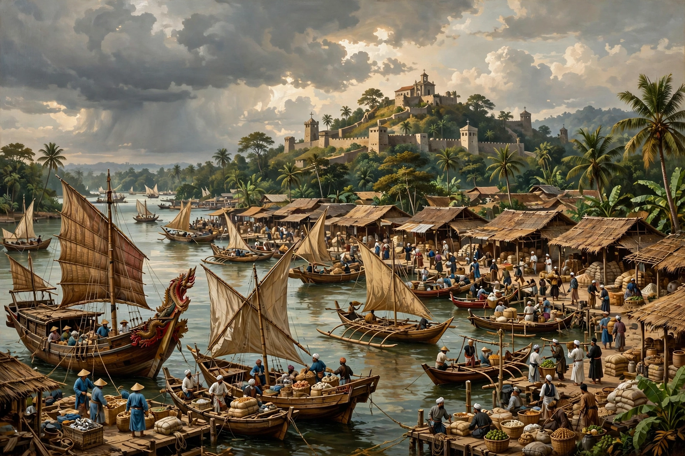

Malacca Sultanate

The Porta de Santiago gate of the Portuguese A Famosa fortress at Malacca
The Malacca Sultanate (c. 1400–1511) was a Malay Muslim sultanate centred on the port-city of Malacca (Melaka) on the strait that bears its name, founded by Parameswara, a prince from Palembang, and destroyed by the Portuguese under Afonso de Albuquerque in 1511. At its height under Mansur Shah (r. 1459–1477) it dominated both shores of the Strait of Malacca and the east coast of Sumatra, channelling the trade between China, India and the Spice Islands through its harbour — where, its chronicles claim, 84 languages could be heard. Malacca's court culture, law codes and Islam set the pattern for the Malay world; its fall opened Southeast Asia to European empire.
The entrepôt
Malacca's rise was diplomacy as much as geography: Ming China, whose treasure fleets under Zheng He called and whose protection deterred Siam, recognised the new port; its rulers converted to Islam (by c. 1414), marrying into Pasai's Muslim networks and attracting Gujarati and Arab merchants. A shahbandar (harbour-master) system for the four trading nations, standardised weights, the Undang-Undang Melaka law code and Melaka's neutrality made it the region's safest market: pepper, tin, camphor, cloves, nutmeg, silk and porcelain changed hands under its laws.
Fall and legacy
The Portuguese, arriving in 1509 and returning in force in 1511, seized the city after hard fighting — Sultan Mahmud Shah fled to found successor courts (Johor), and Malacca became a Portuguese, then Dutch (1641), then British fortress-port. Its fall dispersed Malay and Muslim merchants to Aceh, Johor, Brunei and Makassar, spreading Malay as the archipelago's lingua franca — today the national language of Malaysia, Indonesia, Brunei and Singapore. The sultanate's chronicle, the Sejarah Melayu (Malay Annals), is the classic of Malay literature.